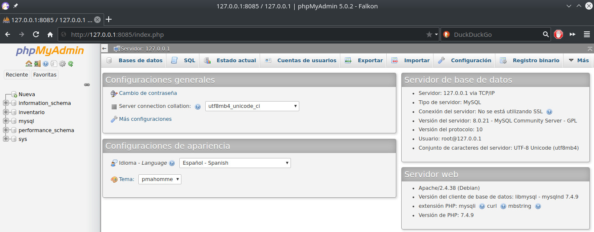

Podman básico: pod con MySQL y PhpMyAdmin
En este ejercicio se van a levantar dos contendores para que interactúen entre sí; uno con el motor de la base de datos y otro con un administrador web.
13 September 2020
Toca turno de practicar cómo levantar dos contenedores sobre un pod que actúa como "puente" que habilita la interacción entre los dos.
Para mostrar en pantalla la ayuda de este tema escriba:
$ podman pod --help
Crear un pod
En este ejercio vamos a crar un pod con el nombre "mi_inventario"
$ podman pod create --name mi_inventario
Para listar los pods ejecute
$ podman pod list
Agregar y arrancar un contenedor al pod
Descargue la imagen de MySQL
$ podman pull mysql:8
$ podman images
Antes de hacer el contenedor con MySQL debemos crear un archivo de configuración
$ nano .env
Donde deben declararse las variables que definen la contraseña root de MySQL, un primer usuario, su contraseña y nombre de la base de datos; cambie las contraseñas a su gusto:
MYSQL_ROOT_PASSWORD=XXXXXXXXXXXXX
MYSQL_USER=inventarioadmin
MYSQL_PASSWORD=XXXXXXXXXXXX
MYSQL_DATABASE=inventario
Con esta orden estará arrancando el contenedor MySQL con el nombre "mi_inventario_db" y agregándolo al pod "mi_inventario"
$ podman run -d --pod mi_inventario --env-file .env --name mi_inventario_db mysql:8
El parámetro -d sirve para "mandarlo al fondo" y que nos devuelva el prompt
Liste los pods y los contenedores con
$ podman ps -a --pod
Pare y elimine lo hecho a este momento con
$ podman stop mi_inventario_db
$ podman container rm mi_inventario_db
$ podman pod rm mi_inventario
Agregar y arrancar dos contenedores al pod
Ahora descargue la imagen de PhpMyAdmin
$ podman pull phpmyadmin/phpmyadmin:latest
$ podman images
Llegamos al punto de usar la cualidad de Podman de "entubar" puertos de un pod; en específico, necesitamos que el puerto 80 de PhpMyAdmin lo podamos acceder en el navegador de internet.
Vuelva a crear el pod dirigiendo su puerto 80 al puerto 8085 localhost
$ podman pod create --name mi_inventario -p 8085:80
Revise listando los pods y los contenedores
$ podman ps -a --pod
Agregue y arranque el contenedor "mi_inventario_db" con MySQL
$ podman run -d --pod mi_inventario --env-file .env --name mi_inventario_db mysql:8
Agregue y arranque el contenedor "mi_inventario_phpmyadmin" con PhpMyAdmin
$ podman run -d --pod mi_inventario --env-file .env -e PMA_HOST=127.0.0.1 --name mi_inventario_phpmyadmin phpmyadmin:latest
Revise de nuevo
$ podman ps -a --pod
En su navegador de internet acceda a PhpMyAdmin con root y la contraseña que haya puesto en .env
http://127.0.0.1:8085

Órdenes adicionales
Pausar
$ podman pod pause mi_inventario
Reanudar
$ podman pod unpause mi_inventario
Parar
$ podman pod stop mi_inventario
Eliminar el pod "mi_inventario" y todos sus contenedores
$ podman pod rm mi_inventario
Navegue por la serie de apuntes de Podman
- Contenedor con documentación de Python
- Contenedor con explorador de archivos web en PHP
- Pod con MySQL y PhpMyAdmin